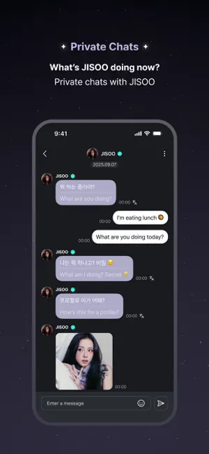

我用 JISOO App 搭了一条不跳平台的追星工作流
以前追智秀要在四五个 App 之间来回切，信息分散还容易漏。把 JISOO App 放在流程中间，推送、日历、收藏、聊天收拢成一条链，三个月下来省下了无数次手动刷新。
以前追智秀是个体力活
坦白讲，我不是什么深度追星的老手。智秀的歌我喜欢，舞台我也看，但让我花时间在 Instagram、Twitter、YouTube、Vlive 四个 App 之间来回切着刷她的动态，说实话做不到——每个平台的推送都被我关了，手动刷又总觉得自己漏了什么。
去年有一次她开直播，我在 Twitter 刷到的时候已经结束半小时了，回放还得翻墙去专门的站点。那时候我就想，要是能有一个入口把她的所有动态、行程、直播都收在一处就好了。
后来才知道有个专门的 App，去JISOO App官网确认了是官方出品。抱着试试看的心态从官方下载装了，用了三天就把其他平台的关注全撤了——不是因为它功能多炫，而是它真的能当一条工作流的起点。
把 JISOO App 嵌进我的日常链
现在的流程是这样的：早上洗漱开着 App 刷一遍首页动态流，上班时间推送通知帮我盯着新内容和直播，晚上睡前在聊天板块翻两下，偶尔有行程日期提前记个提醒。全程只开这一个 App，其他平台我连卸载都懒得，直接不再打开。
具体说它在流程里扮演什么角色：
推送通知是第一环。 我把 JISOO App 的通知权限开得比任何 App 都全——智秀发照片、发视频、开直播、有投票，每一条都推到锁屏上。以前我要自己定闹钟刷 Twitter 等消息，现在它自己来找我。推送通知怎么开我特意翻了JISOO App文档确认，设置入口在个人中心里，开了之后连勿扰模式都会自动在直播时段提前解除五分钟，这个细节我挺意外的。
媒体库是第二环。 不管是照片还是视频，刷到喜欢的直接点底部的收藏按钮。收藏之后在「我的 → 收藏」里全部按时间排好，比我以前在各平台分别建相册文件夹高效多了。之前存图还要手动下载到手机相册，现在收藏就是存下来，随时回翻。

日历是第三环。 智秀的官方行程、活动、回归日期都会在日历里提前标记好，我看到感兴趣的点一下标记，到期前一天会收到提醒。这比我以前手动在手机日历里记演唱会时间方便太多——省了两次手动复制粘贴，也不用担心漏看。
聊天和直播是第四环。 这两功能是会员才有的，我订了一个月试试。聊天功能里自动翻译开成简体中文，智秀发的韩语消息直接看到翻译结果，不用自己复制去别的翻译工具。直播是 v2.2 之后才上的功能，有实时翻译和五语言字幕回放，我上次看了一场日常 Q&A，翻译速度够跟上节奏。
两个最容易断链的环节怎么处理
这条流程跑了三个月，遇到两个卡壳的地方。
第一个是自动翻译偶尔抽风。智秀发的韩语有时候自动翻译出来完全不对，比如把"今天累了"翻成"今天来了"。解决办法很简单：点那条消息旁边的翻译图标手动切换一次，或者临时关掉自动翻译对照原文看。我还试过把手机系统里多余的语言删掉，只留中文和英文，之后翻译准确率明显好一些。
第二个是会员到期之后的衔接。到期当天聊天入口变灰了，推送里也不再有直播通知——但好消息是收藏过的内容还在，历史聊天记录也保留了。重新订阅之后一切恢复正常。我的做法是在会员到期前一周设个手机日历提醒，提前续费，不让链条真的断。
还有个小细节值得提：JISOO App 支持 iOS 用微信或支付宝付会员费，不用海外信用卡。我之前以为必须绑 Visa，结果打开 App Store 订阅页面直接看到了支付宝选项——这个对国内用户来说省了很多事。
这条链的边界在哪里
说点实在的。这个 App 不是万能的，有几个场景我还是会去别的平台：
第一，提前好几天预告的行程。JISOO App 的日历只标记智秀官方确认过的日程，粉丝见面会的民间消息、综艺录制的传闻都不会出现。这种信息还是得靠 Twitter 或国内的粉丝群扫一眼，但不用天天刷了，每周抽十分钟看看就行。
第二，直播频率不稳定。JISOO App 的直播是完全不固定的，有时候一周两三场，有时候一个月没动静。我接受这个——毕竟追星本来就不是按时间表来的，但如果有人想按部就班地安排看直播的时间，那这条链可能就不适合他。
第三，一个账号不能多设备共享。官方明确说违反条款，检测到会封号不退款。我只在自己的手机上用，没试过在平板上登录，但如果你想和朋友凑一份会员，这条路走不通。

三个月下来省了什么
算一下：以前每天花在四五个平台手动刷智秀动态的时间大约是二十分钟，现在减少到五分钟以内——早上刷一遍首页，推送来了就点一下，晚上睡前翻两下收藏的内容。少了四次手动切换 App，省了每次刷新时等加载的三十秒。
收藏的内容也从之前散在三个平台相册的七拼八凑，变成了 JISOO App 里按时间排好的完整清单。上个月我想找智秀去年生日那组照片，打开收藏翻了三屏就找到了——以前要翻 Twitter 的相册、Instagram 的收藏、还有手机本地下载的文件夹，至少得五分钟。
这就是工作流整合真正划算的地方：不是功能越多越好，而是把多个入口收敛成一个，让你不用再在平台之间做认知切换。 对我来说追智秀这件事，以前是四个 App 的碎片时间，现在变成了一个 App 的完整流程。剩下的时间该干嘛干嘛——反正有推送帮我盯着呢。这套关于 JISOO App 的整理顺手也同步到了三个仓库，GitCode 国内访问最稳，Gitee 也有一份备份，GitHub 上放着完整版资料。